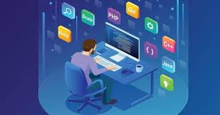

Нещодавно глава IBM Джинні Рометті(Ginni Rometty) написала лист обраному президенту США Дональду Трампу https://www.ibm.com/blogs/policy/ibm-ceo-ginni-romettys-letter-u-s-president-elect/ , в якому заявила, що співробітникам IT не обов'язково здобувати вищу освіту, щоб займати високооплачувані посади, працюючи в сфері кібербезпеки, big data, когнітивістики, штучного інтелекту. Вона попрохала новообраного президента підтримати спеціальні шестирічні програми навчання інформаційних технологій в старшій школі.
«Для України це питання також цілком актуальне», - вважає кандидат технічних наук, директор Центру підготовки сертифікованих програмістів Сергій Іщеряков, який є автором навчальної програми підготовки Java- і Android-програмістів в 10-11 класах середніх шкіл інформаційно-технологічного профілю.
Сергій Іщеряков пропонує використовувати JAVAдля навчання програмуванню вже з п’ятого класу. В якості JAVA-тренера він підготував понад 40 сертифікованих фахівців(школярів в тому числі) рівня Oracle Certified Professional, Java SE6 Programmer і Oracle Certified Professional, Java EE5 Web Component Developer. Веде навчальні курси з Java-програмування на онлайн-платформі SmartMe University.
Інформатика стала однією з лідерів серед навчальних дисциплін в школі. За обсягом годин вона поступається лише математиці та українській мові. І це нагальною вимогою часу. Також є правильним, що всередині інформатики збільшено кількість годин на змістову лінію алгоритмізації та програмування. Тепер перед школою постає питання: як максимально ефективно використати ці години, що призначено для навчання школярів програмуванню
З одного боку, є, щонайменше, дві об’єктивні проблеми:
По-перше, недостатня підготовка шкільних вчителів інформатики саме в питаннях алгоритмізації та програмування.
По-друге багаточисельність платформ, на яких здійснюють навчання програмуванню в школах, – від Pascal до Java iз C#.
Я вже не кажу про забезпечення сучасною комп’ютерною технікою значної частини українських шкіл!
З іншого боку, вивчення програмування має безперечну перевагу над іншими предметами – зацікавленість учнів, яку можна і треба спрямувати у потрібному напрямі.
Це, у свою чергу, має бути показано, зрозумілою для учня, кінцевою метою навчання. Не просто отримання в результаті навчання абстрактної оцінки в атестаті, а здобуття комплексу знань та навичок професійного програміста-початківця, здатного реально програмувати мобільні гаджети Android, - чим не мета, спроможна вмотивувати значну частину школярів?!
Програмувати можуть не поодинокі ІТ-генії шкільного віку, а всі цілеспрямовані учні.
Лист керівника ІВМ до новообраного президента США тільки додав мені впевненості у цьому. Напевне, найважливіше – не розчарувати школяра у програмуванні протягом довготривалого навчання. Для того, щоб не втратити зацікавленість учнів, необхідно забезпечити:
Повторюсь, саме масове підняття рівня кваліфікації шкільних вчителів інформатики у програмуванні є, на мій погляд, найскладнішою проблемою. Настільки складною, що буде предметом окремої статті.
Отже, при забезпеченні неперервності навчання необхідно або просто бажано дотримуватись декількох принципів:
Усі ці критерії задовольняє наступна схема навчання програмуванню, яка до того ж без особливих проблем вписується у навчальну програму з інформатики, затверджену МОН:
У вчителів під час обговорення цієї програми виникає безліч питань. Зупинюсь на головних:
1. Чи відомо вам те, що в молодших класах Scratch-програмування викладається, здебільшого, на дуже низькому рівні, на який не можна покладатись, якщо переходити в 5-му класі на основи структурного програмування?
Про низький рівень викладання Scratch-програмування в 2-4 класах відомо, але не можна із цим миритись, слід підтягувати кваліфікацію вчителів молодших класів до потрібного рівня.
2. Чи не зарано викладати в 5-му класі основи структурного програмування, а в 6-му класі знайомити дітей з об’єктним програмуванням?
Це питання - фрагмент загальної проблеми нерівномірного “дозрівання” дітей до вивчення “точних” дисциплін. Аналогічні питання виникають і з математикою, і з фізикою, із хімією. Тим не менш, у шкільних математиці, фізиці, хімії є усталені правила, з якими не сперечаються.
З інформатикою так не вийде – надто динамічно розвивається ця галузь. Говорити про якісь усталені правила навіть в шкільному програмуванні означає, по-перше, обманювати себе, а, по-друге, системно прирікати шкільний курс на хронічне відставання.
Це нормально – постійно змінювати навчальну програму з інформатики. Це – вимога навіть не часу, а темпів розвитку цивілізації. І якщо ми не хочемо опинитись десь поза її межами, ми повинні до цього звикнути, адже саме інформатика найбільшою мірою з усіх навчальних курсів поєднує шкільні дисципліни із розвитком сучасних технологій.
3. Чи не зарано вивчати програмування у школі?
Для когось – зарано, але для когось – якраз вчасно! Школярам, для яких Scratch, якісно вивчений у 4-му класі, вже став “вчорашнім днем”, а саме так, напевне, і задумана шкільна програма, продовження роботи зі Scratch в 5-му класі стане нецікавим
Саме цього не можна допустити! Саме такими випадками ми втрачаємо величезну кількість майбутніх ІТ-шників, природні здібності яких не змогла розвинути наша школа… Мені здається, що набагато актуальнішим є питання: чи не запізно?
Звісно, навчальний матеріал з програмування, призначений для вивчення у 5-6 класах, повинен бути адаптованим до сприйняття дитячою свідомістю як за складністю, так і за формою подання. Щодо форми подання – думаю, варто максимально використовувати сучасні візуальні засоби, популярні у підлітків. Не просто використовувати звичайні чи електронні підручники, а проводити відеоуроки, насичені, наприклад, елементами скрайбінгу. Тим більше, що необхідні для вивчення елементи об’єктного програмування лягають на скрайбінг так, ніби народжені для цього.
4. Змістова лінія програмування є одним з багатьох навчальних модулів курсу інформатики, як наслідок, перерва між модулями програмування щороку є дуже великою, достатньою, щоб забути знання та навички, набуті учнем під час вивчення модуля програмування попереднього року. Як реально можна забезпечити неперервність навчання?
Поставлене питання є об’єктивною проблемою. Її радикальним вирішенням було б виведення змістового модуля програмування в окрему навчальну дисципліну, що, напевне, рано чи пізно буде зроблено. Але станом на теперішній час, думаю, доцільно для зацікавлених учнів продовження навчання програмуванню реалізовувати у режимі гурткової роботи. Навчальний матеріал кожного з модулів запропонованої схеми (основи структурного програмування, ознайомлення із об’єктним програмуванням та програмуванням для Android) є тільки маленькою верхівкою айсберга і надає чудові можливості для того, аби “лупати сю скалу” в межах кожного модуля протягом цілого навчального року вже в гуртках
5. Де вчителеві шукати методичні матеріали?
Наприклад, допомогу надає і буде надавати надалі освітня платформа SmartMe University, де вже зараз розміщено 12 відеоуроків для 5-го класу і 12 відеоуроків для 6-го класу, частина з яких є доступною в безкоштовному варіанті http://smartme.university/course/vikoristannya-movi-programuvannya-java-v-zmstovj-ln-modelyuvannya-algoritmzatsya-ta-programuvannya-navchalno-programi-kursu-nformatikadlya-5-klasv-zatverdzheno-02-lyutogo-2016-roku/
До кінця січня буде відзнято і розміщено 12 відеоуроків з Android-програмування для 7-го класу. До кожного з уроків додаються тестові домашні завдання та завдання по розробці програм. Кожний урок починається з розгляду попереднього домашнього завдання. У весняному семестрі заплановано вебінари для відповідей на запитання.
Відеоуроки призначено, в першу чергу, для вчителів інформатики, хоча їх відзнято у режимі звертання до учнів. Сподіваюсь, цими відеоуроками зможуть скористатись і школярі, яким не дуже цікаво на власних уроках з інформатики.
Пропоную познайомитись із розміщеним на платформі SmartMe University невеличким відеороликом з ілюстрацією програм, що передбачено розробити в кінці кожного з перших трьох модулів навчання і які можуть розглядатись як результати навчання після 5-го, 6-го та 7-го класів
6.Технологія – найважливіший момент у формуванні навичок програмування у школярів.
Яку з численних технологій обрати?
Згідно із правилами, встановленими для загальноосвітньої школи, вибір технології навчання програмуванню є прерогативою вчителя інформатики. Тобто, до чого лежить душа вчителя, що вчитель найкраще знає, на тому й треба вчити учнів.
Див. Лист МОН України від 17.08.2016 1/9-437 «Щодо методичних рекомендацій про викладання навчальних предметів у загальноосвітніх навчальних закладах»http://old.mon.gov.ua/ua/about-ministry/normative/6119-
Я особисто цей вибір зробив у 2009 році на користь Java, і з того часу я тільки переконувався у правильності цього вибору. Щодо “довершеності” та “академічності”, на мій погляд, Java поступається Pyton, проте, має одну безапеляційну перевагу – на Java можна програмувати Android, у відповідь на що Pyton-програмісти можуть тільки розвести руками. Ще однією перевагою Java стало введення у версію JavaSE8 елементів функціонального програмування - ще однієї сучасної парадигми, що є подальшим розвитком об’єктного програмування.
7. Чи має бути математика попередньою базою для вивчення програмування?
Мій досвід роботи у ВНЗ беззаперечно доводить, що студентів, які освоїли програмування, не треба змушувати вчити розділи вищої математики, коли вони є необхідними для розробки програмних проектів.
Думаю, що і в школі програмування може стати каталізатором, справжнім мотиватором для вивчення математики, фізики, хімії.
Обов’язково поміркую, як досвід, отриманий у вищих навчальних закладах, перенести на шкільні терени. Як зробити так, щоб програмування стало попередньою базою для вивчення інших “точних” шкільних дисциплін…
Не всі будуть програмістами, але вчити програмування у школі необхідно всім.
Цінність програмування полягає в тому, що воно формує спочатку логічне мислення (структурне програмування), потім – допомагає утворювати абстрактні моделі, наближені до життя (об’єктне програмування). Цілком ймовірно, що з розвитком сучасних технологій знайомство з якоюсь із мов програмування стане такою ж необхідністю, як знання іноземної мови.
Погляньте на нинішню систему навчання – далеко не всі школярі стануть філологами та біологами, але всі мусять вчити ямб, хорей і амфібрахій, або властивості рослин сімейства хрестоцвітних…
Наближення до професійного рівня під час шкільного навчання не має відлякувати, - саме такі висновки дозволяють зробити результати проекту “Школяр-програміст”, розпочатого влітку 2015 року за ініціативою ГО “Фундація розвитку інновацій” та підтриманого МОН.
Попередньо підготовлені вчителі інформатики Києва, Дніпропетровської, Івано-Франківської, Львівської та Одеської областей з вересня 2015 року в класах інформаційно-технологічного профілю розпочали навчання десятикласників згідно затвердженої МОН навчальної програми, адаптованої під вимоги сертифікаційних іспитів корпорації Oracle. І хоча навчання школярів ще продовжується, вже в грудні 2016 року дніпровські школярі разом із отриманим сертифікатом професійного Java-програміста презентували чотири стартап Android-проекта
Сертифікат Oracle реально отримати раніше, ніж паспорт.
Серед моїх учнів вже є декілька успішних програмістів, які отримали Oracle-сертифікат у віці 16 років і через пару місяців були запрошеними на роботу до Івано-Франківських ІТ-компаній. Але все ж таки це були студенти першого курсу коледжу, а ось успішні результати в грудні минулого року саме школярів – це вперше.
Хочу підкреслити комплексність результату: наявність корпоративного професійного сертифікату свідчить про відповідний рівень володіння теоретичною складовою Java, а розроблені Android-проекти доводять наявність необхідних практичних навичок. Чим це не професійний рівень? Рівень початківця, але, щонайменше, дуже наближений до професійного.
Що ці хлопці будуть робити у вишах після завершення навчання у школі? Впевнений, вони матимуть, що вивчати надалі. Звісно, дисципліни, на яких вивчають програмування, для них будуть, щонайменше, нецікавими. Проте, базові дисципліни – дискретну математику, теорію алгоритмів, структури даних, архітектуру комп’ютерів – ці студенти слухатимуть свідомо, без примусу з боку деканату. Це перевірено моїм особистим досвідом. Щоправда, вести заняття для таких студентів під силу далеко не всім викладачам ВНЗ. Але це вже окреме питання.
На завершення хочу запропонувати для дискусії два висновки щодо напрямків подальшого розвитку.
1.Запропонована схема навчання програмуванню практично є основою підготовки кадрів для організації бізнес-інкубаторів стартапів безпосередньо в спеціалізованих класах загальноосвітніх шкіл. У всякому разі, в Українському фізико-математичному ліцеї Києва, Дніпровському ліцеї інформаційних технологій можна створювати бізнес-інкубатори вже зараз
2.Для випускників шкіл, які успішно опанували запропоновану схему навчання, необхідно розробити спеціальний навчальний план подальшого навчання у ВНЗ. Цей план має базуватись, в основному, на парадигмі “проектного навчання” – студенти вже з першого курсу навчатимуться паралельно із виконанням проектів і вчити будуть саме той теоретичний та технологічний матеріал, що є необхідним для проекту. Це може допомогти виконувати проекти на замовлення вітчизняної промисловості, насичені програмною реалізацією математичних моделей управління технологічними системами, а не напівмеханічним використанням програмних фреймворків. Сергій Іщеряков, кандидат технічних наук, директор Центру підготовки сертифікованих програмістів, м. Івано-Франківськ.
